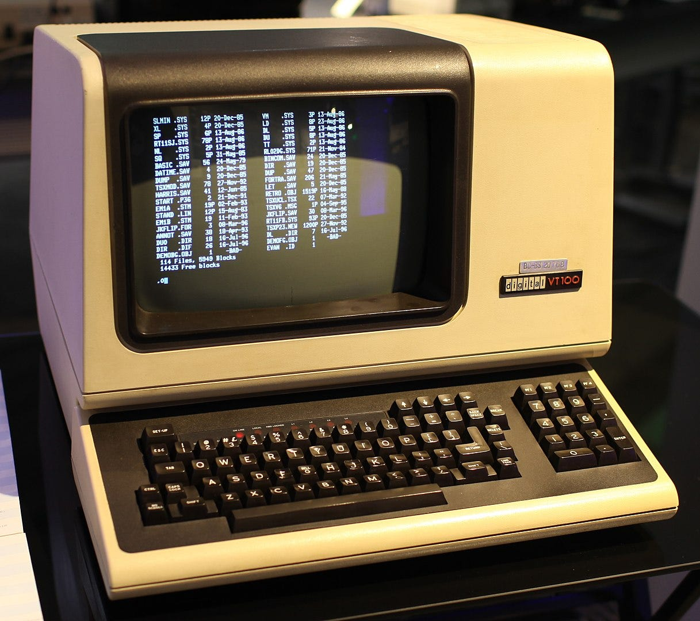

Server
Websites, Datenbanken und Cloud-Systeme laufen oft auf Unix-ähnlichen Systemen.
Vom Terminal zu Android und dem modernen Internet
↓Unix ist ein Betriebssystem, das 1969 entstand. Seine Ideen bildeten die Grundlage moderner Technologien, darunter Linux und Android. In seinen Anfängen besaß Unix keine herkömmliche grafische Benutzeroberfläche. Die gesamte Steuerung erfolgte über das Terminal.

Websites, Datenbanken und Cloud-Systeme laufen oft auf Unix-ähnlichen Systemen.
Android basiert auf Linux und trägt Unix-Ideen in Milliarden Geräten weiter.
macOS und viele Entwicklerwerkzeuge nutzen Konzepte aus der Unix-Welt.
Router, Dienste und Infrastruktur folgen bis heute dem Prinzip stabiler Systeme.
Unix ist unsichtbar geworden, weil seine Ideen überall sind.Zurück zum Anfang